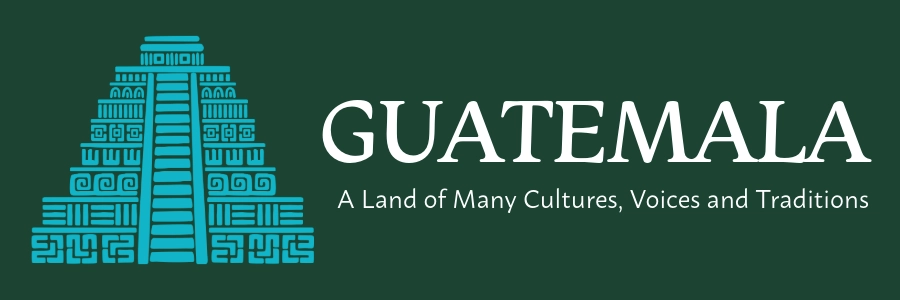
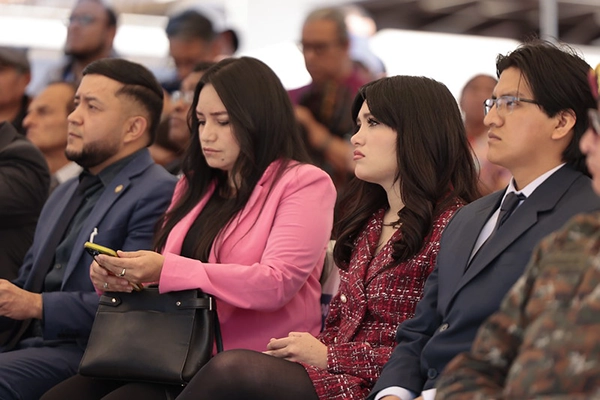
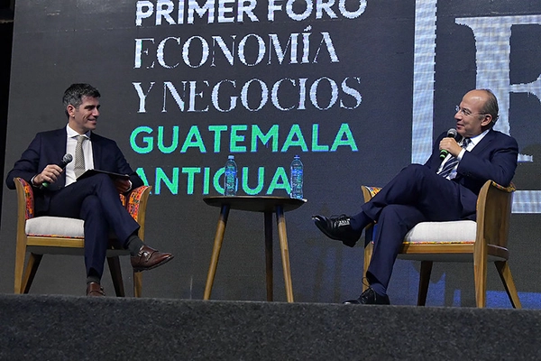
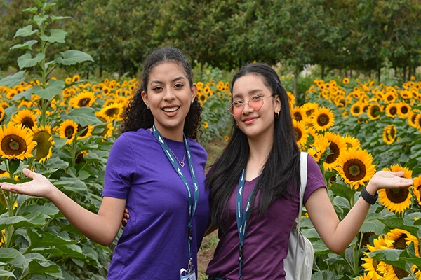
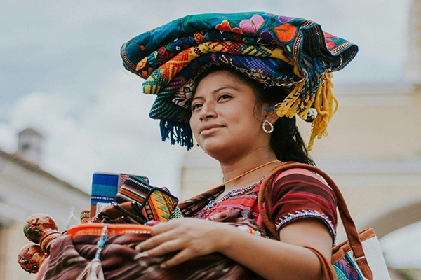
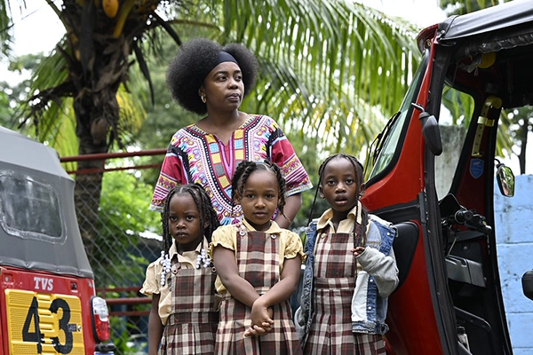
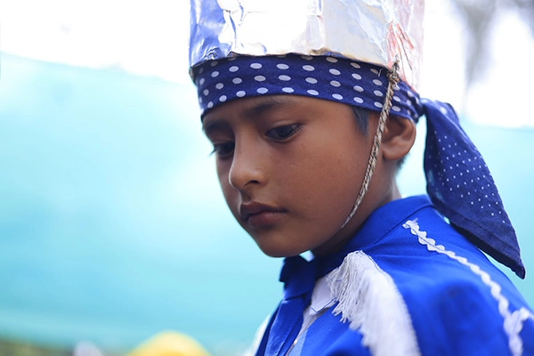

Ladinos are generally people of mixed Indigenous and Spanish heritage or individuals who identify primarily with Spanish language and culture. The Ladino identity developed during the colonial period and became associated with urban life and Spanish cultural traditions.
Over time, Ladinos became more present in political and economic leadership in Guatemala. Many positions in government, business, and national institutions have historically been dominated by Ladino populations, particularly in the capital and major cities.

In contrast, many Indigenous communities, including Maya, Garífuna, and Xinca groups, have historically faced social inequality and discrimination. These communities have often had fewer economic opportunities and less political representation. Despite these challenges, Indigenous groups continue to preserve their languages, traditions, and cultural identities while advocating for greater recognition and equality in Guatemalan society.

Born from the meeting of two worlds, the Ladino identity shaped modern Guatemala, its cities, politics, and culture. Discover the community at the center of the nation's history.

Builders of pyramids, keepers of ancient calendars, weavers of vibrant textiles, the Maya are Guatemala's largest Indigenous people and one of the world's greatest civilizations. Explore a culture that has survived for thousands of years.

From the Caribbean islands to the shores of Guatemala, the Garífuna carry a culture born from African, Indigenous, and European roots. Feel the rhythm of their drums and discover a community like no other.

One of Guatemala's most ancient and least known peoples, the Xinca have called the southeastern highlands home for centuries. Learn about their unique language, their fight for recognition, and their journey to preserve what remains.